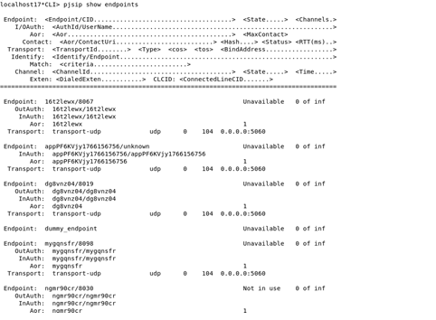
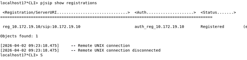
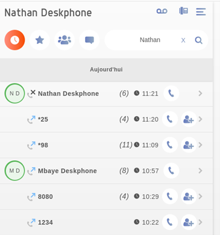
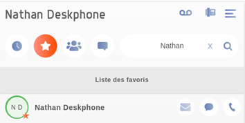

Expertise ToIP : XiVO.
Architecture Call Manager / Protocoles Voix sur IP1. Contexte du Projet
Dans le cadre de ma formation, j'ai pris en main le déploiement d'une infrastructure de téléphonie sur IP (ToIP) complète. L'enjeu était de configurer un serveur XiVO (IPBX basé sur Asterisk) pour répondre aux besoins d'une entreprise moderne : communication interne, interconnexion externe et services unifiés. J'ai administré le serveur vm-iutcl-xivoc-etudiant-17 sur l'adresse IP 10.172.20.27.
2. Travail Fourni
A. Gestion des Identités SIP
J'ai commencé par la création des comptes utilisateurs dans l'annuaire XiVO. J'ai configuré les lignes SIP en attribuant des numéros courts internes et des numéros SDA. Pour chaque ligne, j'ai défini des contextes d'appels spécifiques afin de filtrer les droits d'accès (appels locaux vs appels via Trunk).

Configuration des lignes et SDA
B. Interconnexion : Trunk SIP
J'ai ensuite mis en place un Trunk SIP pour l'interconnexion. J'ai configuré les routes sortantes avec une gestion de préfixes (ex: préfixe "0") et les routes entrantes pour rediriger les appels externes vers les bons terminaux. J'ai validé la signalisation via la console Asterisk.

Routage et interconnexion externe
C. Services Unifiés & Mobilité
J'ai déployé des services avancés : groupes d'appels, conférences et messagerie vocale. J'ai aussi testé la mobilité via des Softphones. Sur la capture ci-contre, on peut voir la synchronisation de mon journal d'appels et de mes favoris directement sur l'interface mobile.


Journal et Favoris (Mobilité)
3. Difficultés Rencontrées
J'ai rencontré des difficultés liées au NAT, provoquant des appels sans audio. J'ai résolu cela en ajustant les paramètres IP dans la configuration d'Asterisk. Le provisionnement automatique des postes (Option 66 du DHCP) a également nécessité plusieurs tests pour que les fichiers de configuration soient correctement téléchargés par les terminaux.
4. Résultat Final & Analyse
L'infrastructure est totalement opérationnelle. J'ai analysé les trames avec Wireshark pour confirmer le bon établissement des sessions : signalisation SIP sur le port 5060 et flux voix RTP sur les ports dynamiques. Cette manipulation a validé ma capacité à gérer un système de téléphonie critique.
Analyse de trame : Handshake SIP